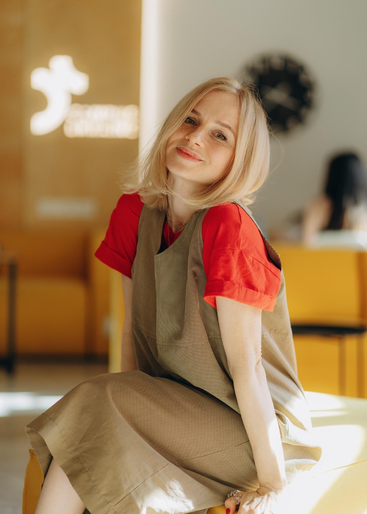

Reach people with the Gospel through genuine relationships, student groups, and meaningful conversations.
My story
My name is Tanya Bura.
I serve with Ukraine for Christ, the Ukrainian branch of Campus Crusade for Christ International.
In a nation transformed by full-scale war, people need God’s hope more than ever. My calling is to help young people encounter the Gospel, grow as disciples, and become a witness for Christ wherever God has placed them.
“The harvest is plentiful but the workers are few.”
Matthew 9:37–38
Matthew 9:37–38
